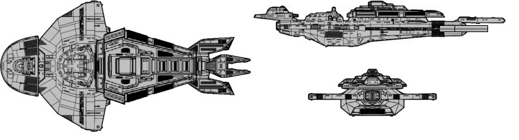

Legate-class Dreadnought (CU)

Battle Stats
Engines and Superstructure
Total Power Units - 150 (Warp Engines - 2x60, Impulse Engines - 30)
MPR - 7/1
Superstructure - 60
Maximum Warp - 3
Industry Points to Build - 12
Beam Weapons (Disruptors)
Max Power - 8
Firing Chart - U
Arcs - 2F, 3F/P, 3F/S, 3A
Bonuses - +3(1-10) +2(11-17) +1(18-24)
Beam Weapons (Phasers)
Max Power - 3
Firing Chart - U
Arcs - 12F
Bonuses - +2(1-7) +1(8-12)
Deflector Shields
Max Shield Power - 18
SPR - 1/3